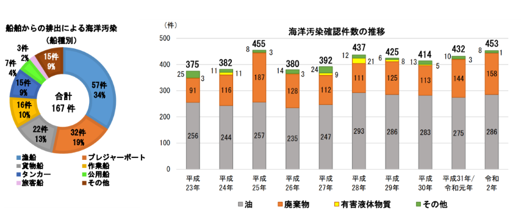
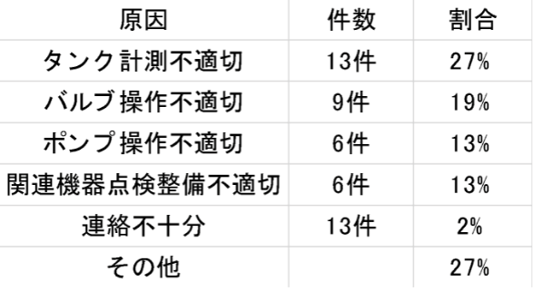
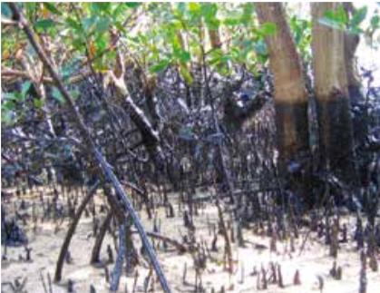
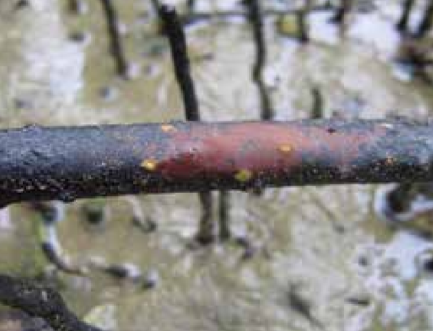
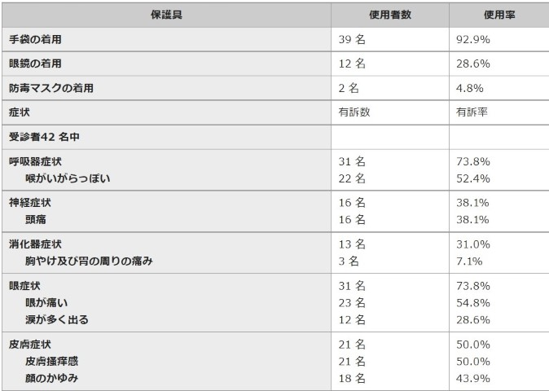

油の流出
現状
海上保安庁(2020)令和2年1月1日から同年12月31日までの間の海洋汚染確認件数は453件(前年比21件増)であり、うち油による海洋汚染は286件(663％)でした。
そのうち、船舶からの排出が167件(58％)で、船種は漁船が最多、次いでプレジャーボート、貨物船、作業船の順でした。

排出原因
船舶海難が最多、次いで不適切なタンク計測やバルブ操作などの作業中における取扱不注意でした。
令和3年度 取り扱い不注意による排出の原因

影響
- 内湾や養殖場などの閉鎖的な空間に生息する海洋生物に油が付着し、海洋生物の大量死や繫殖の妨げになること。
サンゴの感受性は非常に高く、汚染されると回復に長期間を要します。大潮時にサンゴ礁が干上がり、浮遊油によってサンゴが窒息死する可能性があります。
その時、サンゴの生息環境に依存する群落も同様に死ぬ可能性があります。海鳥の卵への汚染は、卵殻の薄化や孵化の失敗、発達異常に繋がり得るのです。
以下の図１、図２は油の影響を受けたマングローブの様子です。

図1 油の被害を受けたマングローブ

図2 気孔が塞がり呼吸困難となった支柱根
- 影響を受けた魚介類を摂取することにより人体に被害が出る可能性があること。
下の表はナホトカ号事故の重油回収作業に従事したボランティアの人々のデータです。これらは重油による症状の詳細を示しています。

- 細胞機能を低下させる化学毒性を持ち得ること。
油流出による影響の規模や期間は、汚染物質の自然による分解速度によって決まります。
流出する油には、重質燃料油（HFO）や風化した残渣など幅広い種類が存在します。その中で毒性を持つものとして、軽質油や石油製品などが挙げられます
これらの油汚染による生物への影響の大きさは生物の脆弱性と感受性の度合いによっても決まります。
例として、重質燃料油（HFO）は分解速度が低く、広域にわたり被害が発生する可能性があります。しかし、含まれる化学成分の生物学的利用能が低いため、有毒になる可能性は低いです。
一方、灯油や軽質油の化学成分は生物学的利用能がより高く、毒性による被害が起こりやすいです。しかし、蒸発しやすいため、感受性の低い動物には影響しないと考えられます。
生物への影響が長期的かつ大きくなる場合として、水の入れ替えが少なく希釈が遅い状況が考えられます。例として、浅いラグーンなどの泥質堆積物や閉鎖性水域汚染物質が閉じ込められている状況が挙げられます。
- 生物の住処の喪失、その結果として生じる生態学的に重要な種の喪失が生じること。
マングローブは、カニや牡蠣などの無脊椎動物に生息環境を提供し、魚やエビなどの成育場でもあります。
マングローブは通常、根の小さい気孔から酸素を取り入れます。油が根を侵食すると酸素供給を妨げ、死に至る可能性があります。
マングローブに生息する生物は、生息環境を喪失する可能性もあります。
解決策
海上保安庁の解決策
- 一般財団法人海上災害防止センター（指定海上防災機関）等の防除措置実施者への指導・助言等を行うこと。
- 事故発生時に原因者の対応が不十分なときは、自ら排出油の防除を行うなど、被害を最小限に食い止めるための措置を講ずること。
- 横浜海上防災基地に機動防除隊 (油等防除に関する専門的な集団)を配置し、油等災害時は日本全国に派遣すること。
まとめ
近年の油による海洋汚染の件数はあまり変化していません。 油の流出による影響として、
- 「海洋生物の大量死や繫殖の妨げになること」
- 「人体に被害が出る可能性があること」
- 細胞機能を低下させる化学毒性を持ち得ること」
- 「重要種の住処の喪失や種の喪失」
このの5つが挙げられます。
これらの対策として海上保安庁は、
これらの対策をとっています。
また、排出油の防除には油吸着材を使用し、いくつかの種類があり、それぞれの特徴に応じて使用されます。
油の流出が海洋汚染に占める割合は、それほど大きくないため、毎年の油の流出件数は減らないままです。
しかし原因である以上、処理または対策が行わなければなりません。
理の過程で体調不良を伴うこと、対策として使用する道具に改善点があること、様々な生態系に悪影響を及ぼすことは確実に注目されるべきことであります。
「海洋汚染」と聞いた時に油の流出も原因の一つであると是非認識してほしいです。